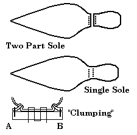

Clump or Repair Soles are thick extra half-soles added to a sole, often as a repair, but sometimes just to thicken the sole. The word may derive from the early Dutch or North German word "Klamp" or "Klumpe", or wooden shoe. There is no evidence that I know of that this is a medieval term.

I have seen two forms of this sort of stitching, and some of the archaeological sources claim there is a third. All three of these methods require blind split sewing (a Tunnel Stitch). In the first two methods (A & B above) the stitching is through the welt, and along the outer edge of the sole. In A, the welt is stitched through, and the sole is sewn, being careful to not poke through the bottom side of the leather. These stitches are fairly regularly about an inch apart. In B, both the welt and the sole are blind sewn. In both of these cases, the waist is stitched through both the insole and the outsole.
In the third method, the blind sewing is done to the sole (which I'm told is very difficult), in a zig-zag pattern along the bottom of the shoe. The equipment needed for this are a curved awl and a curved or flexible needle. This also requires relatively thick leather. Punch holes as you stitch, first on the sole, then on the clump, being careful to not actually punch through the outer side of the leather. The holes are about 1/4" to 1/2" long from entry to exit. After you've pulled the thread loosely through the latest hole, punch the next in the opposite piece of leather just a little bit further on from the exit hole of the last stitch. It will end up something like a loose zig-zag. Since you need some clearance to get at the inside of the leather to do the next stitch, you can't pull the stitches tight right away -- rather you pull them tight every few stitches.
The sole is sometimes clumped separately from the heel because the two areas of the shoe wear at differing rates. In other shoes there is a single piece clump.
Footwear of the Middle Ages - Clump Soles, Copyright � 1996, 1999 I. Marc
Carlson.
This page is given for the free exchange of information, provided the author's name is
included in all future revisions, and no money change hands, other than as expressed in
the Copyright Page.